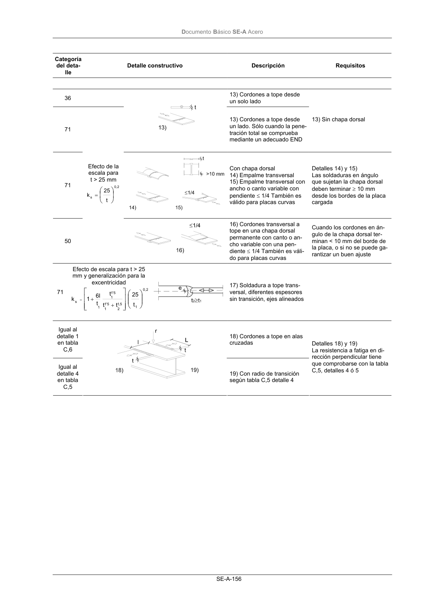

DB-SE-A Acero · edición 2007-10-23 · capa oficial
Documento DB-SE-A-oficial · SHA-256 del PDF 9ed9ea694aabfbda3bfbbef40dfe9223fde05d13c35bc2ba9751e5a96a22a64f
Página física 158 de 168.
Copia fiel del PDF fuente · Fuente oficial
Ficha de la disposición en la fuente oficial
Formato: Texto de la página (Markdown)
Documento Básico SE-A Acero SE-A-156 Categoría del deta- lle Detalle constructivo Descripción Requisitos 36 13) Cordones a tope desde un solo lado 71 13) Cordones a tope desde un lado. Sólo cuando la pene- tración total se comprueba mediante un adecuado END 13) Sin chapa dorsal 71 Con chapa dorsal 14) Empalme transversal 15) Empalme transversal con ancho o canto variable con pendiente ≤ 1/4 También es válido para placas curvas Detalles 14) y 15) Las soldaduras en ángulo que sujetan la chapa dorsal deben terminar ≥ 10 mm desde los bordes de la placa cargada 50 Efecto de la escala para t > 25 mm 2 , 0 s t 25 k = 16) Cordones transversal a tope en una chapa dorsal permanente con canto o an- cho variable con una pen- diente ≤ 1/4 También es váli- do para placas curvas Cuando los cordones en án- gulo de la chapa dorsal ter- minan < 10 mm del borde de la placa, o si no se puede ga- rantizar un buen ajuste 71 Efecto de escala para t > 25 mm y generalización para la excentricidad 2 , 0 1 5 ,1 2 5 '1 1 5 '1 1 1 s t 25 t t t t l6 1 k + + = 17) Soldadura a tope trans- versal, diferentes espesores sin transición, ejes alineados Igual al detalle 1 en tabla C,6 18) Cordones a tope en alas cruzadas Igual al detalle 4 en tabla C,5 19) Con radio de transición según tabla C,5 detalle 4 Detalles 18) y 19) La resistencia a fatiga en di- rección perpendicular tiene que comprobarse con la tabla C,5, detalles 4 ó 5
